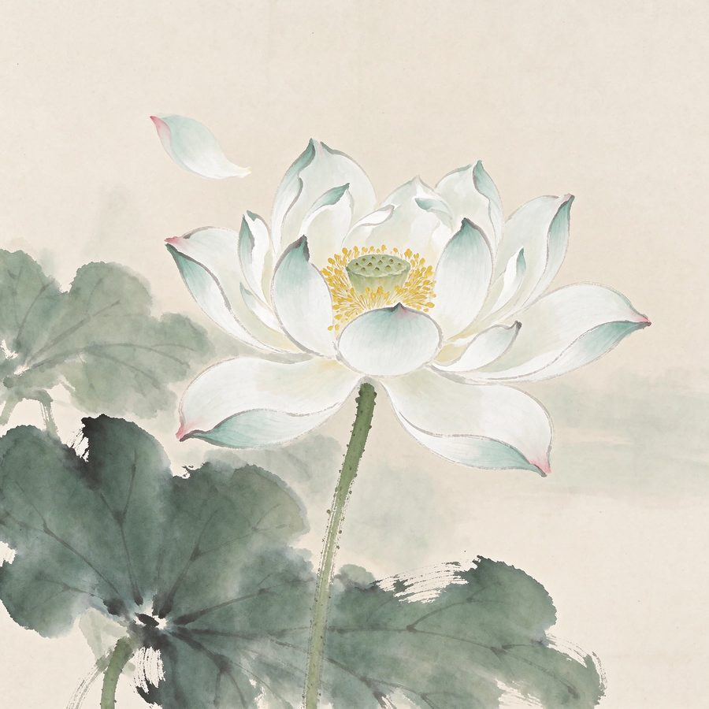

INTEGRITY
何为廉洁
廉洁，意为不贪取、不谋私，公私分明、清白自守。在校园之中，廉洁文化体现为诚实守信、公道正派、节俭自律，是立德树人、涵养品格的重要一环。
“ 出淤泥而不染，濯清涟而不妖 ”——守一份清白，留一世清风。
“廉”字本义指堂屋的侧边，方直而有棱角，后引申为品行端方、不贪不取。廉洁并非清高自守，而是守住边界：公私分明、取予有度、言行一致。
落到校园里，它就是考试时的不作弊、论文里的不抄袭、评优时的不拉票、经手公物时的不私占——都是具体而微的选择。
“ 不要人夸好颜色，只留清气满乾坤 ”——王冕《墨梅》
